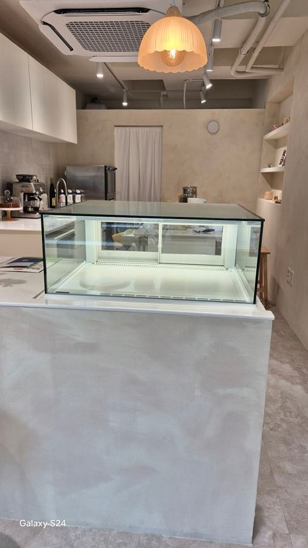

오픈쇼케이스
오픈쇼케이스 맞춤제작, 상담부터 설치까지 이렇게 진행됩니다

오픈쇼케이스 맞춤제작은 무엇을 몇 개 진열할지, 손님이 어느 방향에서 집어 가는지를 먼저 정한 뒤 그에 맞춰 폭·단수·조명을 설계하는 방식으로 진행됩니다. 문이 없는 만큼 냉기가 머무는 구조와 설치 자리의 공기 흐름까지 함께 보셔야 실패가 적습니다.
안녕하세요. 문 없이 손님이 바로 집어 가는 오픈쇼케이스를 매장마다 다르게 만들어 온 한성쇼케이스입니다.
샐러드, 샌드위치, 도시락, 음료를 파는 매장 사장님들은 대개 이런 고민에서 출발하십니다. "기성품은 폭이 애매하게 남거나 모자란데, 주문 제작은 절차가 복잡하지 않을까?"
막연히 어렵게 느껴지지만 순서만 알면 그리 복잡하지 않습니다. 오히려 사장님이 미리 정해 두실 것 몇 가지만 분명하면 상담 시간도 짧아지고 결과물도 정확해집니다.
오늘은 오픈쇼케이스를 주문 제작할 때 어떤 단계를 거치는지, 각 단계에서 무엇을 결정해야 하는지 차례로 안내해 드리겠습니다.
1. 상담: 무엇을, 어떻게 집어 가는지
첫 상담에서 가장 먼저 여쭙는 건 진열할 상품입니다. 높이가 낮은 샐러드 용기와 키 큰 페트 음료는 선반 간격이 전혀 다르고, 도시락처럼 무게가 있는 상품은 선반 하중도 따져야 합니다.
다음은 손님 동선입니다. 매장 벽에 붙여 한쪽에서만 꺼내는지, 섬처럼 가운데 두고 사방에서 집어 가는지에 따라 앞면 높이와 깊이가 달라집니다.
계산대와의 거리, 직원이 뒤에서 채워 넣는 통로도 이 단계에서 함께 정합니다.
- 진열 상품 종류와 가장 큰 상품의 높이
- 벽면형인지 아일랜드형인지
- 상품을 채우는 직원 동선
2. 설계: 가로로 넓게, 냉기는 안쪽으로
오픈쇼케이스는 상품이 한눈에 들어오도록 가로로 길게 펼치는 구성이 유리합니다. 세로로 높게 쌓으면 위쪽 상품이 손님 시야를 벗어나고, 아래 칸은 허리를 숙여야 해서 손이 덜 갑니다.
문이 없으니 냉기가 밖으로 흘러나가지 않게 붙잡아 두는 설계가 중요합니다. 진열 칸 앞쪽 가장자리를 넘치게 채우면 냉기 흐름이 끊기므로, 상품을 둘 수 있는 라인을 미리 정해 선반 깊이를 잡습니다.
영업이 끝난 뒤 덮는 나이트커버를 넣을지도 이때 결정합니다.
큰 매장에 너무 작은 쇼케이스를 두면 답답해 보이고, 좁은 매장에 큰 것을 넣으면 통로가 막힙니다. 도면에는 매장 폭과 통로 폭을 함께 표시해 비율을 확인합니다.


3. 제작: 도면 확인 후 공장 생산
도면이 나오면 치수, 프레임 색, 조명 색, 선반 단수, 가격표 레일 위치까지 꼼꼼히 확인해 주세요.
제작이 시작된 뒤 바꾸면 일정이 밀리기 쉽습니다.
한성쇼케이스는 직접 운영하는 제조 공장에서 생산하기 때문에 상담 때 정한 내용이 그대로 제품에 반영됩니다.
본사가 자재를 대량 매입해 쓰고, 냉각은 유럽제·삼성 콤프레셔를 사용합니다.
- 도면의 치수와 통로 폭
- 프레임·조명 색과 가격표 레일
- 나이트커버 포함 여부
4. 설치: 공기 흐름까지 보고 자리 잡기
오픈쇼케이스는 주변 바람의 영향을 많이 받습니다. 에어컨 토출구 바로 아래나 출입문 정면에 두면 냉기 커튼이 흐트러져 내부 온도가 쉽게 올라갑니다.
설치 날에는 이런 위치를 피해 자리를 잡고, 전용 전원과 기계실 통풍 공간을 확인합니다.
전원을 켜고 온도가 안정된 뒤 진열을 시작하시면 됩니다. 판매 이후에도 전국 240여 개 A/S 센터를 통해 관리받으실 수 있습니다.
체크리스트
- 진열 상품 목록과 최대 높이
- 벽면형·아일랜드형 결정
- 설치 자리 폭과 통로 폭
- 에어컨 토출구·출입문 위치
- 나이트커버·가격표 레일 옵션
현장에서 자주 보는 경우: 기성 규격이 업종과 맞지 않을 때
작은 매장을 여는 창업자분들이 맞춤 제작을 찾는 이유는 대부분 같습니다. 기성 쇼케이스는 정해진 규격으로 나오다 보니 샐러드 가게, 반찬 가게, 카페처럼 업종마다 다른 진열 방식을 담아내기 어렵기 때문입니다.
한성쇼케이스는 20년 넘게 쌓은 제작 경험과 직영 제조 공장을 바탕으로, 상담 단계에서 매장 인테리어와 원하는 제작 기간, 디자인을 먼저 확인하고 설계에 반영합니다.
공장에서 바로 고객과 거래하는 구조라 유통 단계가 줄고, 판매 이후 애프터서비스까지 길게 관리하는 것을 중요하게 여깁니다.




자주 묻는 질문
맞춤제작 상담 때 무엇을 준비하면 되나요?
설치 자리 실측 치수, 매장 평면도나 사진, 진열할 상품 목록이면 충분합니다. 인테리어 콘셉트 사진이 있으면 프레임 색과 조명을 정하기가 더 쉽습니다.
오픈쇼케이스는 전기를 많이 쓰지 않나요?
문이 없어 냉기 관리가 중요한 것은 맞습니다. 에어컨 바람을 피한 자리 선정, 진열 라인 지키기, 영업 후 나이트커버 사용만으로도 부담을 줄일 수 있습니다.
한쪽은 오픈형, 한쪽은 문 달린 형태로 섞을 수 있나요?
가능합니다. 상단은 밀폐형, 하단은 오픈형처럼 진열 상품에 맞춰 구성을 나누는 설계도 상담 단계에서 함께 검토해 드립니다.
매장 조건에 맞춰 만드는 한성쇼케이스
원하시는 제품 사진과 설치할 공간 사진만 보내 주셔도 매장에 맞는 구성을 추천해 드립니다.
- 전국 240여 개 A/S 전담 센터 운영
- 본사 대량 자재 매입으로 품질 대비 합리적인 가격
- 유럽제·삼성 냉각 콤프레셔 적용
- 국내 최초 쇼케이스 전문 디자이너 상주
매장 폭과 원하는 진열 구성을 알려 주세요. 실측과 견적을 안내해 드립니다.
031-986-2458